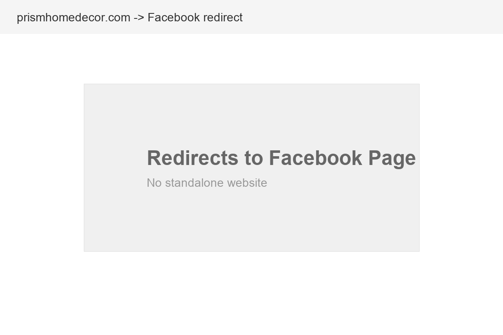

Prism Home Decor, LLC is a specialty home accents and gift shop owned by Susan Orahood, located inside Warehouse 61 at 61 Flax Street in Delaware, Ohio. The shop specializes in decorative home accents and distinctive gift items, offering a curated collection that blends vintage charm with contemporary style. It is the kind of place where you walk in looking for one thing and leave with three things you did not know you needed.
Warehouse 61 itself is an indoor flea market and antique mall just east of downtown Delaware, a destination that draws treasure hunters, antique enthusiasts, and anyone looking for something with more character than what big-box retailers offer. Prism Home Decor occupies space within this multi-vendor marketplace, which means it benefits from the foot traffic of the entire venue while maintaining its own distinct brand and product identity.
The location is significant. Downtown Delaware has become a vibrant destination with a growing arts, dining, and shopping scene. The historic district draws visitors year-round, and the steady population growth in Delaware County (Ohio's fastest-growing, adding roughly 12 new residents per day) means more potential customers who are furnishing and decorating new homes.
Susan has built something genuinely appealing: a curated collection of home decor and gifts with a personal touch that online retailers and big-box stores simply cannot replicate. The challenge is that very few people know it exists beyond those who have already discovered Warehouse 61 in person. The tagline "Give the Past for a Present" captures the spirit perfectly: vintage-inspired, thoughtful, and distinctive.
Being inside Warehouse 61 is both an advantage and a limitation. The advantage: built-in foot traffic from the antique mall's visitors, shared marketing from Warehouse 61's own presence (the venue has 14 photos and a 5.0-star review on Yelp), and a unique shopping atmosphere that creates memorable experiences. The limitation: Prism Home Decor's identity gets subsumed by the larger venue. Someone searching for "home decor Delaware Ohio" will never find Prism specifically. They might find Warehouse 61, and then maybe discover Prism inside.
Prism Home Decor operates on a weekend-focused schedule: Saturdays and Sundays, 8 AM to 4 PM, with Fridays from 12 PM to 6 PM. This schedule aligns with Warehouse 61's operating hours and the shopping patterns of the antique and flea market audience. However, it means that anyone wanting to visit during the workweek has no option, and anyone who does not know the hours might show up to find it closed.
A website would solve this by clearly communicating hours, showcasing the collection, and allowing Susan to highlight new arrivals and seasonal items that give people a reason to make the trip on the weekend.

Captured March 29, 2026
Prism Home Decor's digital presence is minimal. The website URL (prismhomedecor.com) redirects directly to the Facebook page, which means there is no standalone website at all. And the Facebook page itself has gone dormant, with the last post dating back to December 2021, over four years ago.
The Facebook page for Prism Home Decor has 118 followers and is categorized as "Shopping & retail." The profile includes the correct address (61 Flax Street), phone number, and some photos of product displays. However:
The home decor and gift market in Delaware, Ohio is served by a mix of local boutiques, antique shops, and national chains. Here is how Prism Home Decor compares:
Prism Home Decor occupies a niche that neither national chains nor online-only retailers can fill:
The home decor market in Delaware has an interesting gap: there are antique shops that sell old things and national chains that sell mass-produced things, but very few curated boutiques that blend both. Prism Home Decor fills this gap perfectly. The problem is that nobody searching online would ever know it exists.
Home decor is one of the most visual and search-driven retail categories. People actively search for inspiration, specific items, and local shops:
Home decor is inherently visual. Customers often search by browsing images rather than reading text. This creates massive opportunity on platforms Prism is not currently using:
Delaware County adds roughly 12 new residents every day. Many of these newcomers are moving into new construction homes that need decorating. They search for "home decor stores near me" as they settle in. Right now, they find HomeGoods, Target, and Hobby Lobby but not Prism Home Decor. A website with a Google Business Profile would put Prism in front of every new resident decorating a new home.
Home decor and gift searches follow predictable seasonal patterns that Prism could capitalize on with timely content:
The way people discover home decor and gift shops is evolving rapidly. Here is what matters for Prism Home Decor:
Google Lens and AI-powered visual search are transforming how people shop for home decor. A customer can now take a photo of a friend's vase and search for something similar. Retailers with product images indexed by Google appear in these visual search results. Without a website hosting product photos, Prism will never appear in any visual search, no matter how beautiful the inventory is.
When someone asks an AI assistant, "Where can I find unique home decor in Delaware, Ohio?", the AI draws from structured web data. Businesses with websites, Google Business Profiles, and reviews get recommended. Businesses without them do not exist in the AI's knowledge base. As AI-assisted shopping grows, this gap will only widen.
Google "near me" searches for shopping categories have grown significantly. "Home decor near me," "gift shop near me," and "antique store near me" are all high-volume, high-intent queries. These searches rely on Google Business Profiles with accurate hours, location, photos, and reviews. Prism Home Decor is invisible to every one of these queries.
Instagram and Facebook now support direct shopping features: tagged products, shop tabs, and in-app purchasing. For a visually-driven business like home decor, social commerce is a natural fit. But it requires an active social presence with regular posting and product tagging. With the last Facebook post from 2021, Prism is missing this entire channel.
Consumers increasingly value experiences over transactions. Shopping at Warehouse 61, discovering unique items curated by Susan, and the treasure-hunt atmosphere all constitute an experience that big-box retailers cannot offer. But this experience needs to be communicated online before it can be experienced in person. A website with beautiful photography, Susan's story, and the Warehouse 61 atmosphere would turn online browsers into in-store visitors.
Prism Home Decor needs a digital presence that does three things: makes the shop discoverable, showcases the collection beautifully, and gives Susan tools to keep it fresh. Here is the plan:
Build a beautiful, image-forward website that showcases Prism's collection the way it deserves. Gallery pages organized by category (wall art, tabletop, candles, gifts, seasonal), an About page telling Susan's story, hours and directions, and a "New Arrivals" section Susan can update easily. Mobile-first design because most home decor browsing happens on phones.
Create and fully optimize a Google Business Profile for Prism Home Decor at 61 Flax Street. Categories: Home Decor Store, Gift Shop, Antique Store. Professional photos of the shop and products, accurate weekend hours, and the website URL. This single step puts Prism on the map for every "home decor near me" and "gift shop Delaware Ohio" search.
Revive the Facebook page with fresh content and extend to Instagram, which is the natural home for home decor content. Weekly posts featuring new arrivals, styled product shots, and behind-the-scenes looks at Susan's buying process. A consistent posting schedule that builds anticipation for weekend shopping visits.
Create dedicated landing pages for seasonal shopping: "Holiday Gift Guide," "Mother's Day Picks," "Fall Home Refresh." These pages target seasonal search traffic and give Susan shareable content for social media. Each guide features curated product photos with prices and availability, driving foot traffic during peak shopping periods.
Build a simple email list of loyal customers and new subscribers. Monthly "New at Prism" emails featuring fresh arrivals, upcoming events at Warehouse 61, and seasonal highlights. Email is the most reliable way to bring repeat customers back and costs virtually nothing to maintain.
We would build Prism Home Decor's digital presence to be beautiful, manageable, and effective. Here is the process:
Total time commitment: under 3 hours for the initial build. Ongoing: 15-20 minutes per week for photos.
A website is the foundation. Here is the full digital ecosystem that would maximize Prism Home Decor's reach and revenue:
Put Prism on the map for every "home decor near me" and "gift shop Delaware Ohio" search. Photos, hours, reviews, and Google Posts featuring new arrivals. This is the single most impactful step for driving foot traffic.
Home decor is Instagram's sweet spot. Beautiful product shots, styled vignettes, Reels showing the Warehouse 61 experience. Build a following of design-conscious locals who plan their weekend around what is new at Prism.
Dedicated web pages for holiday, Mother's Day, housewarming, and hostess gifts. Shareable on social media, findable in search. Each guide drives foot traffic during peak spending periods and positions Prism as the go-to gift destination.
Monthly "New at Prism" emails to loyal customers. Announce new arrivals, seasonal collections, and Warehouse 61 events. Direct line to customers who already love the shop. Brings them back more often.
Encourage happy customers to leave Google reviews. A simple card at checkout with a QR code linking to the review page. Even 10-15 genuine reviews would establish Prism as a trusted local shop in search results.
A "Shop" page with featured items available for purchase or reservation online. Even without full e-commerce, a "Reserve This Item" button that sends Susan a notification would capture customers who want to guarantee a piece before their weekend visit.
Home decor and gift retail has strong margins, especially for curated boutiques that avoid competing on price. Here is the revenue lens for Prism Home Decor:
A website, Google Business Profile, and revived social media would drive incremental foot traffic to Prism. Here is what modest growth looks like for a weekend-focused retail operation:
If Prism adds even a simple online shop with featured items available for shipping, the revenue potential expands beyond the local market. Home decor items with character ship well and appeal to buyers across Ohio and beyond. Even a modest e-commerce addition of $500-$1,000 per month would represent significant incremental revenue for a weekend operation.
Home decor is a repeat-purchase category. Customers who love a boutique return seasonally to refresh their homes and find gifts. An email newsletter that brings existing customers back one extra time per quarter is worth more than all the new customer acquisition combined. One additional visit from 50 regulars at $45 average = $2,250 per quarter, or $9,000 per year, just from email-driven repeat visits.
Aspire Digital builds websites for locally owned businesses that have something special but need help showing the world. Prism Home Decor is exactly that: a beautifully curated collection in a charming setting, run by someone who genuinely cares about what she sells. That story deserves to be told online as well as it is told in person.
We understand visual retail. We know that for a home decor business, the photography is as important as the code. We know that Susan does not want to spend hours managing a website. She wants to spend her time doing what she does best: finding beautiful things for her customers. So we would build something that is stunning to look at, simple to maintain, and effective at driving new customers through the door.
What we love about Prism's story is the specificity. This is not a generic home goods store. It is a curated collection inside an indoor flea market just east of downtown Delaware, Ohio. That specificity is your superpower online. When someone searches "unique home decor Delaware Ohio" and finds a beautiful website with Susan's personal curation story and gorgeous product photography, they are not just clicking a link. They are planning a Saturday trip to Warehouse 61.
No pressure, no jargon. Just a conversation about giving Prism Home Decor the digital showcase it deserves.
Book a Free Strategy Callor email Chris directly